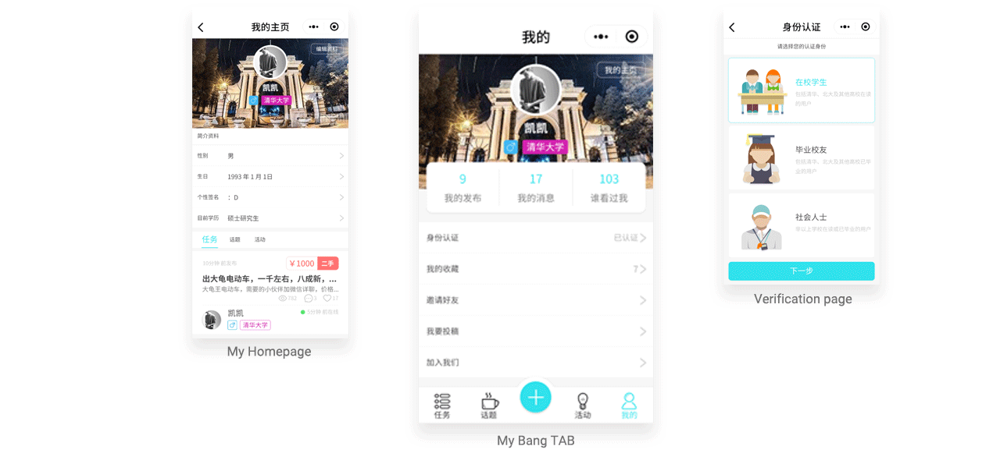

Introduction
Liba-Bang Technology Inc
Start-up Real Business
Version 1.0 Development
2018.6-2018.7
Version 1.0 Launching
2018.9
Version 1.1 Launching
2018.11
# Product Design #
# UX and UI Design #
# WeChat Mini-Program #
# College Student Information Service #
What is THPK-Bang?
THPK-Bang mobile service is providing on-campus information, second-hand exchanging, social media, association activities and off-campus housing, dating, career service for students who are studying at THU and PKU , the most famous universities in China which both located in WU DAO KOU district in Beijing.
Project Background
A information exchange platform
for college students
LiBa-Bang Technology Inc is a company that provides peer-to-peer information services among the top 5 universities in China. The company currently has launched a product named THPK-Bang which owns over 40,000 users. The core value of the company is connecting young college students and making their lives easier.
THPK-Bang was an Html 5 product focused on providing service via mobile way. But with the WeChat using rate growing, our team is always exploring new business model and trying to find a closer way to enter the market. Thus we choose WeChat Mini-Program to develop our new program.
Why discard Html 5 product
and chose Wechat Mini Program?
1.Html 5 limitation:
The old function was too basic and the user experience is not very smooth.
2.Higher adhesiveness of WeChat:
We've had a certain volume of daily users on the WeChat Public Platform and the WeChat adhesiveness of our target users is strong, so building a Mini-Program Product rather than a Native Mobile Application which means relative higher customer cost is more effective.
3.Ease of Mini Program Development:
Based on Html framework, it's easier to build MVP and has a shorter sprint for launching new version on WeChat than APP store.
Research Results and Persona
Information Providers and Information seekers

Information Providers
THU and PKU Students
Needs:
1. Exchanging Second-hands objects
2. Having better capacity and experience in studying and learning, College Entering Examination, and time management.
3. Having interests in social activities and events around campus
4. Sharing popular things happening on campus
5. Finding an internship

Information seekers
Students from other Universities
High school students’ parents
Needs:
1. Finding a private tutor from THU or PKU for the exam
2. Finding a boyfriend or a girlfriend for future marriage
3. Recruiting an intern
Needs Collection
After user research, I synthesized insights and narrowed down these needs we found into four big parts:
second-hand sales,
job searching and hunting,
on-campus events
and dating.
Then I tried to integrate these needs to product feautre and prioritize them for product development.
Information Architecture
and Wireframe
There are some basic functions I need to concern before design.
The first one is the mission function including submit mission by users and demonstration in our product.
The second one is about student activities, and the users also need to issue activity by themselves and have access to the activities list. For setting and editing user information, I also need to provide a page or many pages for them.
Main Page 1: Homepage: Mission List
Notes:
1. Mission list shows three missions in one screen to fill the content
2. Mission types and terms depend on the specific situation
Main Page 2: Topics(Social Meida Aspects)
Notes:
1. Shows thumbnail in the list
2. Only shows four lines in one topic card
Main Page 3: Events List(Partnership with University Club)
Notes:
1. Masks a dark translucent layer on the thumbnail
UI Design

Goals:
1. Easy to publish information
2. Fast to receive response
3. Accessible to various information
Keywords:
Swift, Easy to Use, Simple and Clean, Responsive, Various, Stable.
Colors:
Based on the Research from NICK BABICH, above 50% people think that their favorite color is blue which is also globally thought the safest color in the world.
So I chose to use blue as the primary color in our product which means innovative, energetic and simple. Correspondingly, it could show the goal of our product. And in business design, most of the companies which emphasise technology and efficiency chose to use blue as their standard color.
Homepage-Mission List-Detailed States

Mission Function Related Pages

Topics Function Related Pages

Events Function Related Pages
My and Setting Function Related Pages
Reflections and Future
Now we have launched our product on the WeChat platform and had more than 1000 users to use every day. And our next step is to optimize the main function like issue mission, topic and activity and at the same time to fix some bugs which are critical for the user experience.